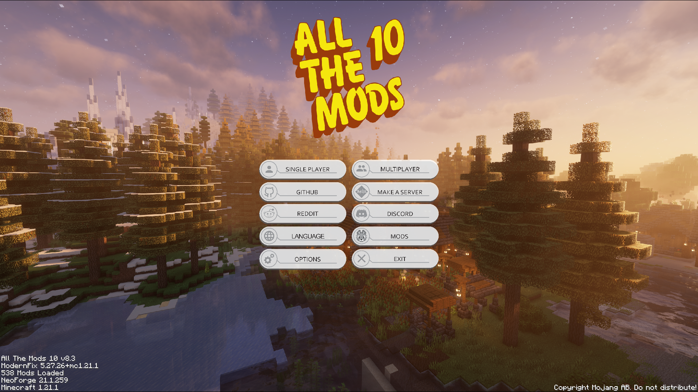
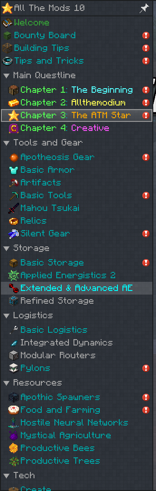
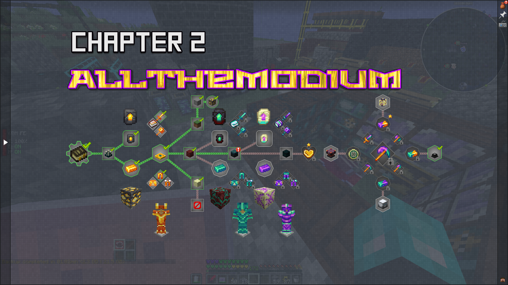
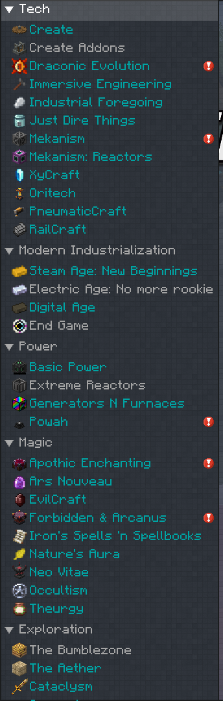
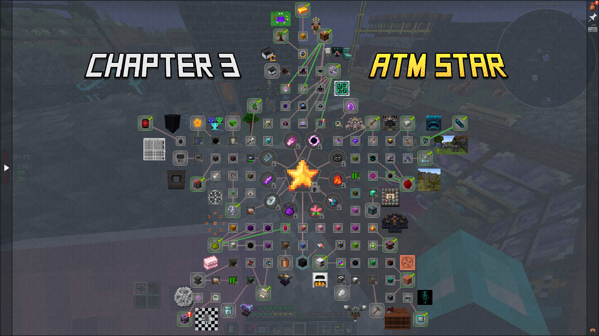
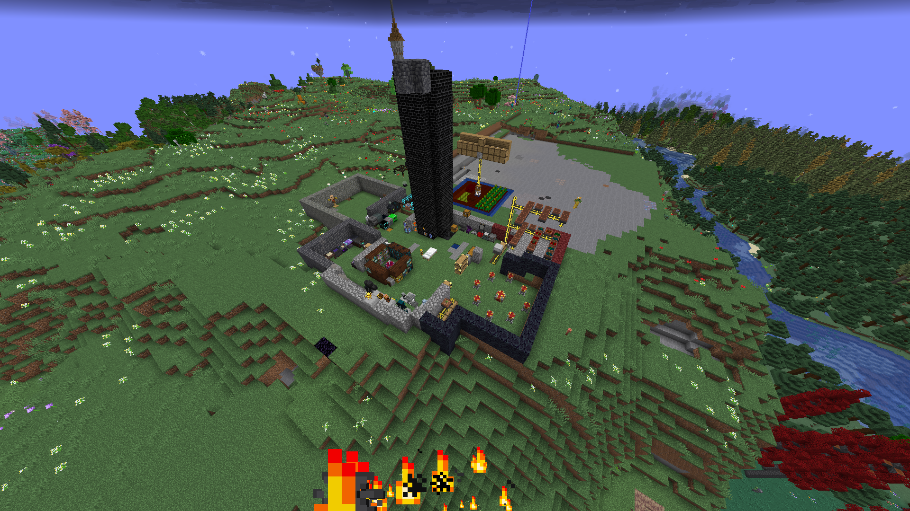

You want a modpack where you can quickly progress, want to build giant machines and achieve absolute godhood? All the while beating challenging foes? If this sounds like you, then let me introduce you ATM10!
Performance
Atm10 has long loading screens whenever you launch a world first time logging in, intense processes once you reach the endgame needing strong pc-s and I have heard of being unable to load into worlds at the end state of the game when choosing the wrong mods. altough until the point I played I had no problems, your play experience might differ.
Content
Well, to be honest ATM 10 can be experienced by so many players, because its a "kitchen sink" modpack, meaning it has hundreds of mods packed into one, and on the way you can decide wich to use for your needs. (storage for example has many)
This is also something many people don't like and think it looses quality for the sake of quantity, however if you want to experience many mods, and interact with them maybe for a little bit or long extended play sessions, starting out here, to touch many of the most popular mods, download it and have fun!
There is also a mod made for this pack as well, the atm mod, wich features among other things, the allthemodium,vibranium, unobtanium and the allthemodium alloy! Wich are ingots addes as another gear progression that you can use and make into armor and tools. they are tied to dimension progression wich some people may not like.



The creators might release an expert pack, featuring the "Greg Star" explained later
Main audience
As I previously stated the pack has hundreds of mods. Containing exploration based ones with structures, Tech based scifi machines or even nuclear/atom reactors. Difficult bosses, and QoL mods as well, to look out for you during gameplay. EVERYONE can find something they like so its great for friendly play session so you can work together to reach the end.
Speaking of wich...
Progression
Progression!
You have one goal in mind, the ATM star requiring the most expensive items from most (almost all) of the mods you play with throughout the game! isn't that fun? Intercepting every mods elements into one item! This in turn makes you wanna build huge machines to create enough energy, and materials for everything.

Some people complain about the ammount of afking required for the modpack, however there are ways around it, some atm experts complete everything in little over 2 hours when speedrunning!
But you are no expert, so grab a few friends and have away with your preferred mods to interact with and claim bragging rights over the "I completed ATM10" star!
Final Toughts
I had fun playing the pack, call it boredom, call it ADHD I like having many tasks to complete and hearing that satisfying quest completion sound and looking at a chapter in my book and seeing all the green checkmarks everywhere.p
So if big machines and huge structures to explore while still knowing you are making progress to one huge goal sounds fun go over and start downloading this pack!
